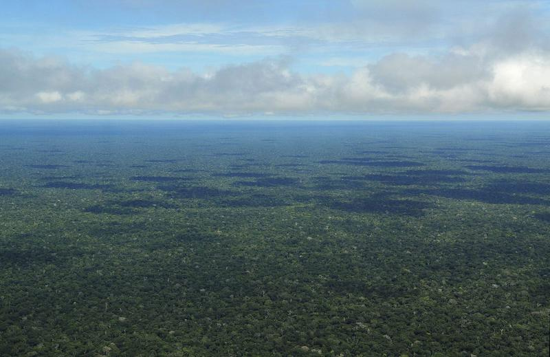
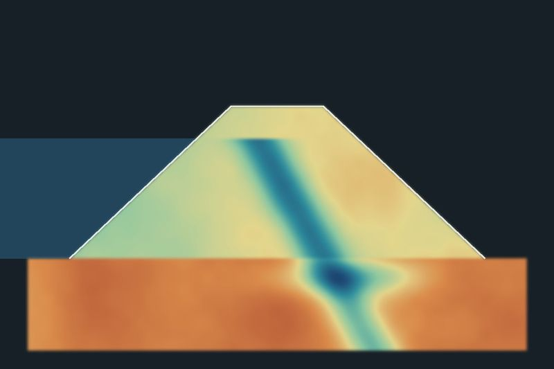
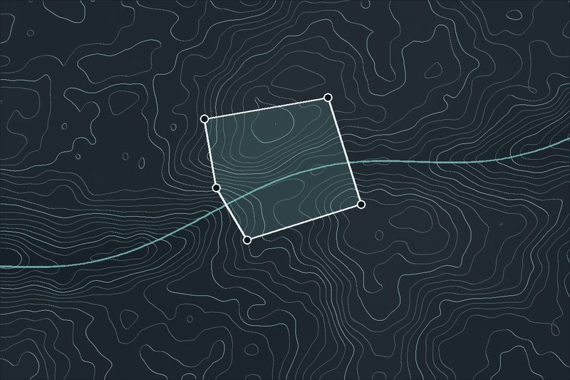

Axys Geofísica
Levantamentos geofísicos
Eletrorresistividade, magnetometria e gamaespectrometria em terra e com drone, para água subterrânea, pesquisa mineral, geotecnia e meio ambiente.
Conhecer a Axys Geofísica
Geofísica, monitoramento de barragens, topografia e instrumentos, a partir de Belém do Pará, para quem precisa decidir com dados sobre o terreno.
O que você precisa?Escolha o que mais se parece com o seu projeto. Cada área tem equipe e página próprias.
Levantamentos geofísicos
Eletrorresistividade, magnetometria e gamaespectrometria em terra e com drone, para água subterrânea, pesquisa mineral, geotecnia e meio ambiente.
Conhecer a Axys Geofísica
Monitoramento de barragens e segurança geológica
Campanhas geofísicas periódicas em barragens, taludes e encostas, comparadas no tempo para enxergar a água avançando antes que ela vire risco.
Conhecer a Axys Safe
Topografia e regularização de imóveis
Georreferenciamento rural, regularização urbana, usucapião e levantamentos planialtimétricos, do campo ao cartório.
Conhecer a Axys Topo
Instrumentos geofísicos
Resistivímetro, magnetômetro e gamaespectrômetro para drone, em desenvolvimento em Belém, com a experiência de campo dos sócios.
Conhecer o Axys LabEmpresa nova, equipe experiente. Os sócios trazem anos de levantamentos e de processamento de dados para grandes empresas do setor, agora com atendimento direto.
Base na Amazônia. Sede em Belém e logística pensada para floresta, rio, chuva e acesso difícil.
Quem assina, vai a campo. O profissional responsável planeja, acompanha o levantamento e assina o relatório.
Do dado à decisão. Relatórios objetivos, com mapas, seções e recomendações que um gestor consegue usar.
A preencher Números da experiência dos sócios (antes da Axys) e estados atendidos.
Onde atuamos Confirmar estados
Conte o que precisa investigar, acompanhar ou regularizar, e onde. Indicamos o próximo passo.